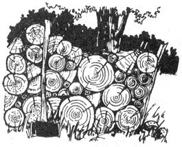

Instead of putting posts in the ground for a wood rack (as Tom Murray suggested on page 29 of MOTHER NO. 25), you can make a holder that looks like a sled. The runners can be two 2 X 8's, about 7 feet long and 2-1/2 feet apart. Round off the bottom corners for the front and nail a 2-X-something crosspiece at each end and in the middle. Then attach three 2 X 4 uprights, about 4 feet high, on each side.
Fill your rack full of poles, crank your saw and go to work! You can cut 20-foot trunks in your contraption if you saw first one end, then the other, to keep them balanced. I can turn out a cord of wood an hour this way. I know it sounds unbelievable, but it's true.
Dan Shipman
Grant City, Mo.
I have to disagree with Tom Murray's article "Twice the Wood in Half the Time" (MOTHER NO. 25). I don't intend this as a wisecrack, but just how much wood have you guys cut to let it get past?
OK, this is what I mean. You might be able to drive a post-hole 18 inches deep by prying a dig bar back and forth in Iowa, where they have six inches of topsoil . . . but most of us back-to-thelanders don't live in Iowa. You dig a hole, any hole, and the rock in there usually brings you up short with a jar and a lousy string of profanity. And you have to go deeper than 18 inches to set a post right. As a matter of fact, two feet is a bare minimum. Frost during a heavy winter goes 18 to 24 inches deep and the bottom of your post had better be below frost line or you get heaving . . . which is one more excuse to teach the kids all those words you don't want them to use yet.
Another thing: You'd better durn well not hit the saw's chain in the dirt. Chains cost $15.00 to $25.00, and a rock can rip off a set of teeth faster than you realize . . . and there the kids are, eagerly standing by, adding to their verbal skills. So don't ever run into the ground.
Next, Murray's method leaves you with six or eight good fenceposts cluttering up a space you use only a few days a year. A man can cut and cord perhaps three cords a day. You use six cords a year, if you have good wood and not pine. You cord wood when you have a few hours to spare. The rest of the time, the posts just stand there and clutter. I don't know, maybe they'd make a good place to grow pole beans or sump'n . . . but if the uprights aren't locust, they'll rot out in five or ten years.
And then, and then comes the real boner. The fellow in the two drawings is cutting some nice wood. But if he'd let the darn trees grow up, he'd have ten times as much to burn. Maybe he was clearing land. That's a waste . . . just how much acreage does he need to live on? If those trunks in the rack are oak or maple or any good hardwood, they're maybe 15 years old. He should have let them be for his middle age. And if they're locust or a scrub tree, that's a lot of good fenceposts going up in smoke.
It all boils down to this: Most firewood I've cut is timber, not saplings. The tree is anywhere from 18 inches to three feet across, and it isn't possible to move the fellow . . . you have to cut him in pieces right there, so that you can then put a splitting wedge to 'im. And which is easier: to drag a pile of 20foot poles out of the woods, or to load your cut and split wood on a sledge, say "Hei'a" and let the horses (or tractor) haul it out over the road?
Now I come to an essential point: The whole notion of doing the job by the pole contraption in the article is alien to the fact of what you , as a person, are doing. If we decide to cut wood, certain rules must apply to the game . . . and the first is that it should be a game: something enjoyable which we do by choice, not by necessity. Yes, it is necessary to get the wood in, but why not do the job when we choose to (rather than when the house is at 40° and the woodshed empty)? If the act itself is worth doing, then it's worth doing enjoyably. Cutting wood is no more of a drudgery than weeding the garden, and I don't think I have to launch into a Rodale essay on the joy of gardening to make that point.
Cutting wood, after all, is the best excuse to get out in the woods without violating our Puritan ethic (we have a right to be there, remember?). We mingle with the forest, we move over it, culling and pruning and being at one with it. This isn't a very heavy trip . . . any dirt farmer does the same, except that he doesn't usually wax poetic about the job.
My last comment relates to the basic belief of most homesteaders: simplicity with economy. The act of using a chain saw is complicated by oil, gas, chains, noise pollution, danger . An axe and a crosscut saw, with a pair of sawhorses, are preferable by far . . . because the tool which is most adequate to do the job, with the least complexity, is the right tool to use.
A tractor may outperform a brace of horses, but a team will comfortably and adequately care for the needs of the average family and leave a nice surplus for market. Do you want to be a Kansas wheat agribusiness, or a part of the earth? A matter of personal taste, finally.
And that suggests some other points: When all the gas is gone, what do you do with your combines and your tractors? When the air is foul and stinks in your head, what will your children have to live with? When you finally come to die, what memories will you carry into the sod with you: ghostly images of a tractor that belched and roared 12 hours a day, or of the gentle tinkle of horses' harness?
Our time on earth in tenuous and fleeting, and is gone before any of us realizes it. Simplicity brings us closer to the fundamentals of all life, and is more akin to our basic feelings. People in the city are divorced from life and die regretting it . . . or become automatons. We of the land shall endure.
J.
West Virginia
|
 |
|
|